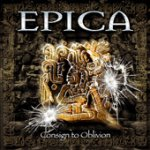

|
|
||
Epica : Consign to Oblivion (2005) |
|

http://www.epica.nl |
1. Hunab K'u 1:43 |
7.9/10 |
|
Consign to Oblivion es el título del segundo disco de la banda holandesa Epica, liderada por el ex-After Forever Mark Jansen. Tras un debut interesante, de sonido quizás excesivamente suave para mi gusto, pero que encajaba sin problemas en los esquemas del metal gótico más atmosférico, la banda no ha tardado demasiado en tener listo un segundo trabajo. "Hunab K'u" es una introducción orquestal, con coros y realmente espectacular y llamativa, incluso en una época en que todo el mundo parece estar haciendo intros de este tipo. Aunque "Dance of Fate" da los primeros signos de metal en el disco, con una batería muy presente, estos se diluyen pronto para respetar la voz de Simone Simon, en un tema triste con algunos pasajes pegadizos. "The Last Crusade" arranca con la guitarra eléctrica en un potente diálogo con los coros, que acaba por dejar paso a Simone que, junto a la sección de metales de la orquesta, toma el peso de la melodía y de un bonito estribillo. "Solitary Ground" es una balada lenta, evocadora, donde la delicada voz de Simone brilla en los tonos más altos. En "Blank Infinity" tenemos otro ejemplo del estilo de Epica con un tema cuyo peso es llevado por la voz de Simone, los coros y la orquesta, formando una melodía interesante y muy bien trenzada eso si, pero con la guitarra eléctrica casi desaparecida. En "Force of the Shore" aparece un gruñido masculino para oponerse a la angelical voz femenina lo que, junto a los coros, aporta una textura diferente a esta canción que incluso podría pasar por black metal sinfónico durante algunos momentos y que es de las mejores del disco. "Quietus" comienza con cierto aire folk, que se diluye sin traumas en la melodía principal, que de nuevo se caracteriza por condenar a la guitarra a acompañar a la orquesta salvo en algunos breves momentos. "Mother of Light" surge con un ritmo rápido a doble bombo que, con cambios, acompaña a la voz de Simone, retada de nuevo por gruñidos masculinos, y a los originales coros que dan carácter a este tema, completado con una interesante parte instrumental. "Trois Vierges" es una balada muy suave en la que Roy Khan, vocalista de Kamelot, acompaña a Simone. Otro coro épico abre "Another me in Lackech", que es otra pieza para la orquesta acompañada ocasionalmente por la guitarra y donde los coros transmiten casi toda la fuerza. Una densa atmósfera se abre paso en el comienzo de "Consign to Oblivion", buena canción de corte épico que tiene partes de auténtico black metal entrecruzadas con la orquesta, está salpicada de imponentes coros, y deja incluso espacio para que la pomposa sección de metal reclame protagonismo. Este es uno de esos álbums que me cuesta puntuar. Para mi es demasiado suave, igual que le pasaba al primero. En mi opinión la orquesta debería acompañar a la banda, no al revés. Hay muchos discos, no sólo de metal gótico, que demuestran que se puede estar acompañado por una orquesta, o tener una delicada voz femenina y aún así ser cañero. Sin embargo estamos hablando de un disco de metal gótico, y es probable que el hecho de la práctica desaparición de las guitarras no sea tan relevante para muchos de los aficionados a este género. En fin que lo he puntuado pensando que habría que añadir más metal al gótico de este grupo, pero sospecho que para muchos fans de este género este álbum merecería una nota más alta. |
||
- Crítica escrita por Rubén Béjar - |
||